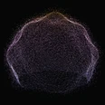
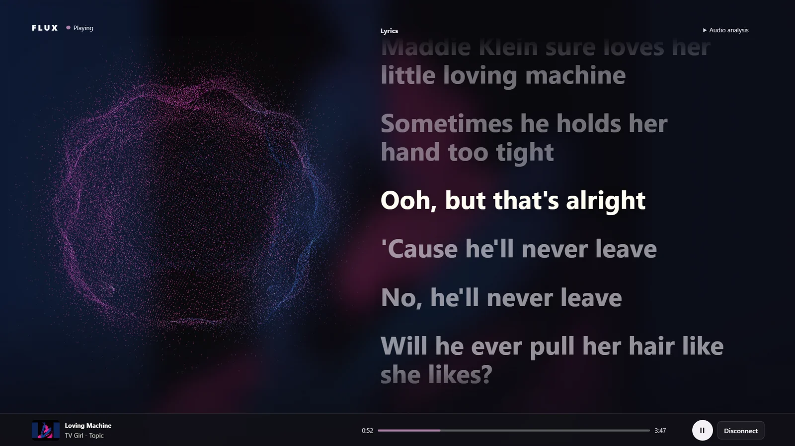
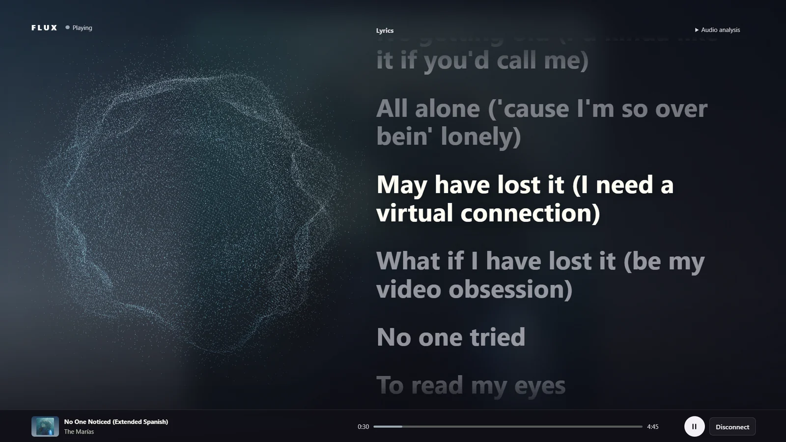
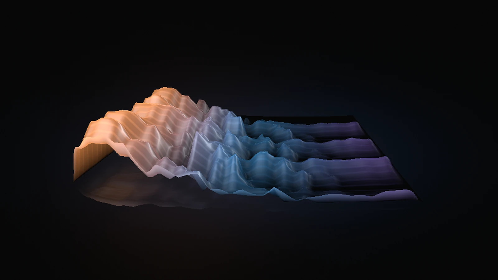
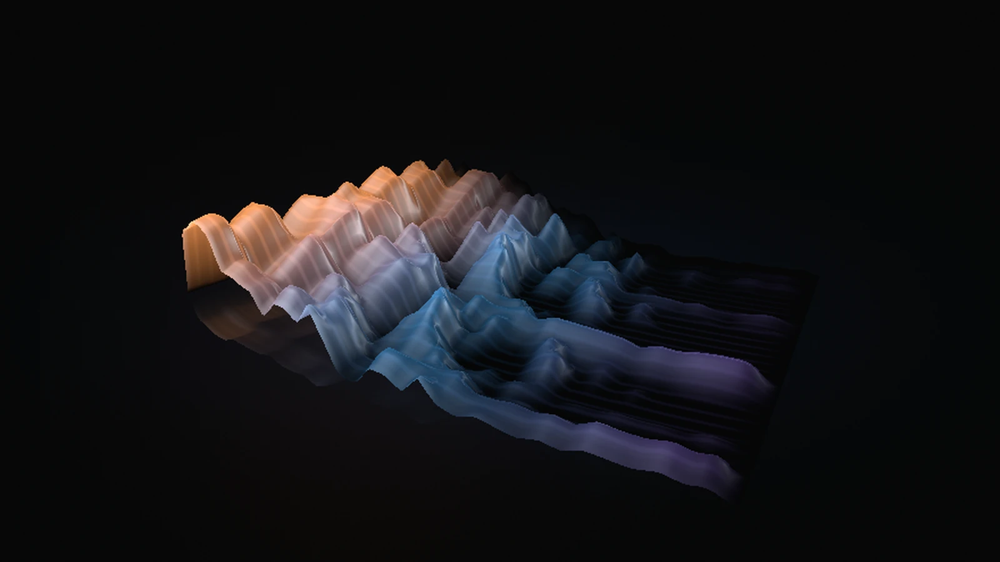

Artwork in motion
The linked video's thumbnail supplies the theater palette. Singularity reacts to the captured tab audio.
A listening theater for Chrome
Watch sound take shape. Follow lyrics through a YouTube track and let the artwork color the room.

Singularity previewInside the extension
The current line glides into view. Scroll ahead on your own, tap a lyric to seek, or choose Follow lyrics to return to playback.




The linked video's thumbnail supplies the theater palette. Singularity reacts to the captured tab audio.
Violet bass, blue mids, and teal treble trace the rim. New sound appears at the inner edge and travels outward. Drag the demo to turn the aperture.
FLUX uses timed lyrics when it finds a match and falls back to YouTube captions when available. Arrow keys skip five seconds.
The Windows companion can separate vocals from backing tracks and generate English captions on your device.
Downloads
Unpacked extension for YouTube. Includes the optional Windows companion installer.
The portable desktop visualizer with system audio capture.
chrome://extensions, enable Developer mode, and choose Load unpacked.manifest.json. Open YouTube and click FLUX in the toolbar.